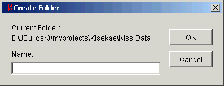

Welcome to the Kisekae Archive Manager program documentation. The Archive Manager Extract Function is used to extract elements from an archive file. This document describes the Extract options and features.
The Extract function is used to extract file elements from an archive file. The standard Extract screen is shown in Figure 1.
Figure 1. Extract Screen
The files to be extracted must have been previously selected within the Archive Manager element list. File selection is as described in the Menu commands for the Edit-Extract command or Edit-Select All command.
Files must be extracted into an existing directory on your system. The directory tree list as seen in Figure 1 can be used to specify the destination directory for the extract operation. The directory tree list shows only file directories. By scrolling the list and clicking on an entry you can select a directory or parent directory for the extraction.
The Extract To field is not editable. This field shows the fully qualified path name of the current directory selected in the directory tree list.
If you wish to extract the archive files into a new directory, the New Folder button can be used to create a new directory relative to the current directory shown in the Extract To field.
The Selected Files radio button is automatically set if the Extract function has been invoked from the Archive Manager and files were selected from the archive element list. This button is disabled if no files were selected. This option is superceded if the All Files option is set.
The All Files radio button is automatically set if the Extract function has been invoked from the Archive Manager and no files were selected from the archive element list. If files were selected this option can be used to request that all files from the archive be extracted to the specified directory.
When element files are extracted these files can either overwrite any existing element in the extract directory with the same name, or not replace the element if it already exists. The Overwrite Existing Files option lets the archive extract replace existing directory elements. Every element in the directory with a similarly named element to an extracted archive element can be replaced, subject to the Skip Older Files option.
If this option is not set then similarly named elements in the file directory will not be replaced.
When element files are extracted from an existing archive file the elements can either unconditionally replace any existing element in the extract directory with the same name, or conditionally replace the element if the extracted element is newer than the directory element. The Skip Older Files option conditionally replaces directory elements. No element in the directory will be replaced if it has an update or creation date later than the date of the extracted element in the archive. The Skip Older Files option prevents a later modified element from being replaced with an earlier version of the element.
Archive elements can be saved in the archive with path names. If selected elements have path names then this option must be set to restore the directory paths when the elements are extracted. The extract operation will create new file directories as required.
If this option is not set all path information associated with the archive element is ignored. All selected archive elements will be written to the same extract directory set through the Directory Selection.
The Extract button initiate the archive file extraction. When files are extracted from an archive the files are written to a file directory. Elements in the directory are replaced with the new files depending on the Overwrite Existing Files option or the Skip Older Files option. All other elements in the directory are retained.
The directory file update occurs as a background write activity. Figure 2 shows a write operation in progress. This operation can be cancelled if necessary.

Figure 2. Extract File Write
The Cancel button closes the Extract screen dialog without updating the directory file.
The Help button shows this online help document.
The New Folder button will create a new file directory of the specified name relative to the current file directory in the Extract To field. Figure 3 shows a prompt for a new directory name.
When the new directory is created the directory tree list will be refreshed and the Extract To field will show the path name to the new directory.

Figure 3. Create New Folder
Prior Document: Add Function
Copyright (c) 2002-2023 William Miles